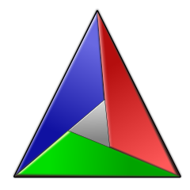

AWK {}$BASH
C
$perl
| Vim Plug-Ins – Overview | ||||
|
goto Plug-Ins |
goto Toolbox |
|||
| FEATURES | |
|---|---|
Quickly write your code:
Quickly comment your code:
Quickly test your code:
|
Quickly get help:
|
| Plug-Ins | |||
|---|---|---|---|
AWK {} | AWK-Support | $BASH | Bash-Support |
C | C/C++-Support | Git-Support | |
| LaTeX-Support | Lua-Support | ||
$perl | Perl-Support | VimL-Support | |
| Toolbox | |||
|---|---|---|---|
|  | CMake-Tool |  | Doxygen-Tool |
Make: | Make-Tool | ||
Page updated: %DATE% / Mail to: %MAINTAINER_NAME%
Git Logo by Jason Long is licensed under the Creative Commons Attribution 3.0 Unported License.
Lua Logo by Alexandre Nakonechnyj is licensed as specified here.
Vim Logo by www.vim.org. –
CMake Logo by cmake.org. –
Doxygen Logo by Doxygen.